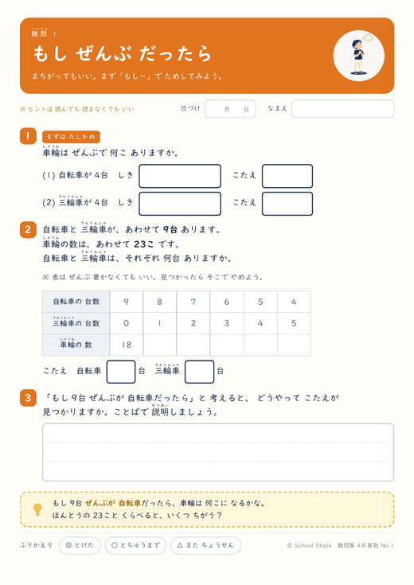
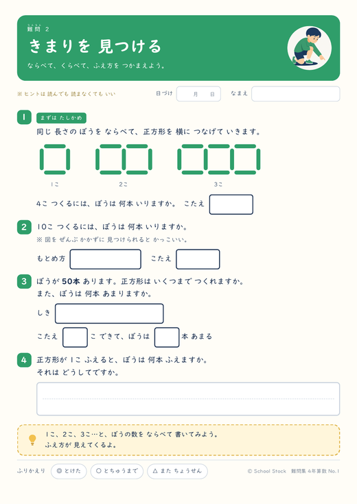
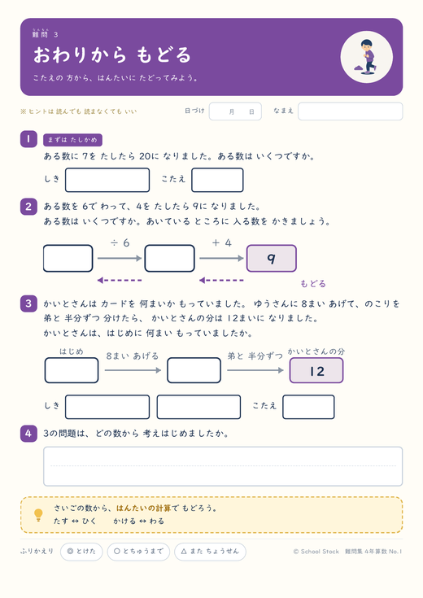
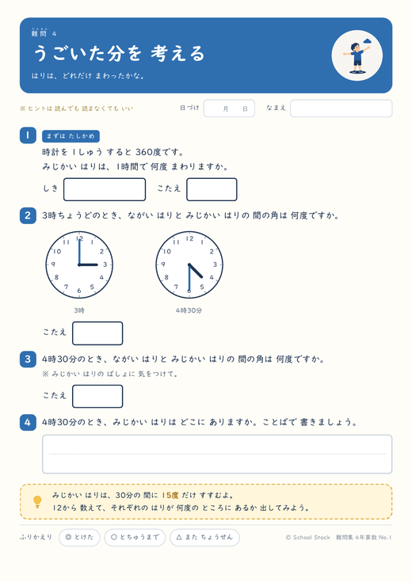
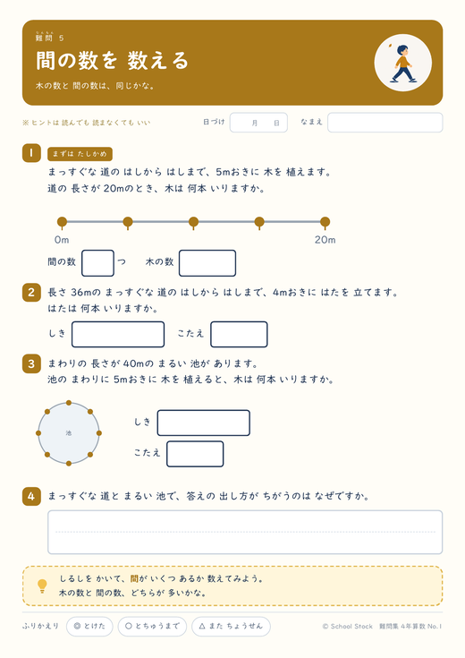
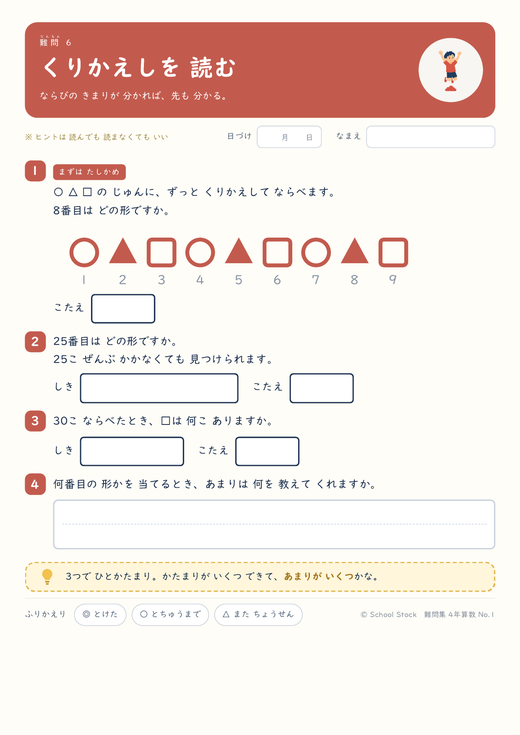
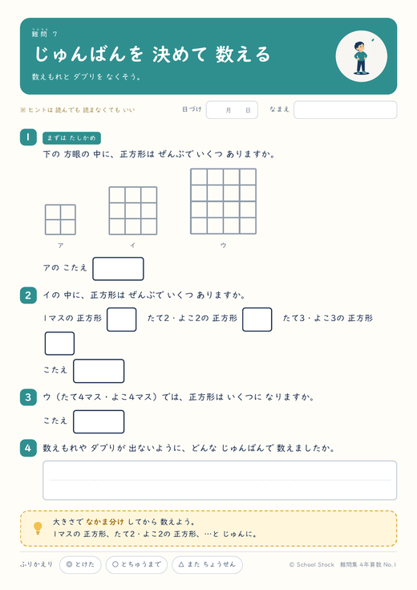
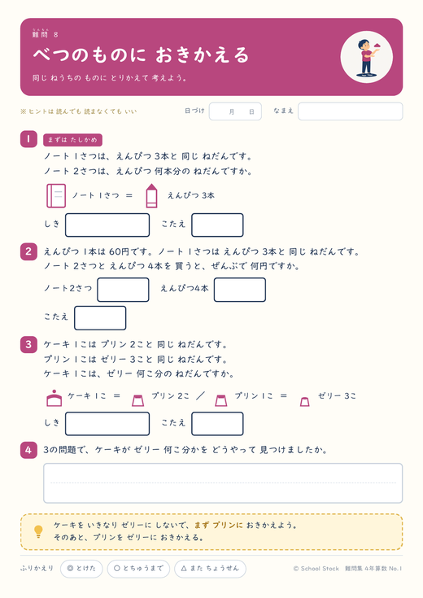
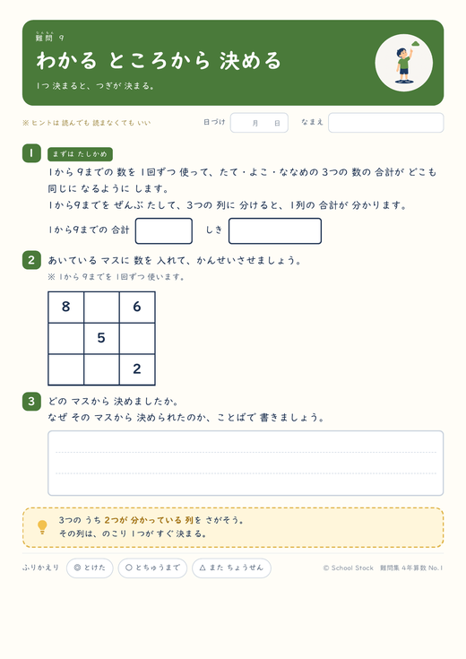
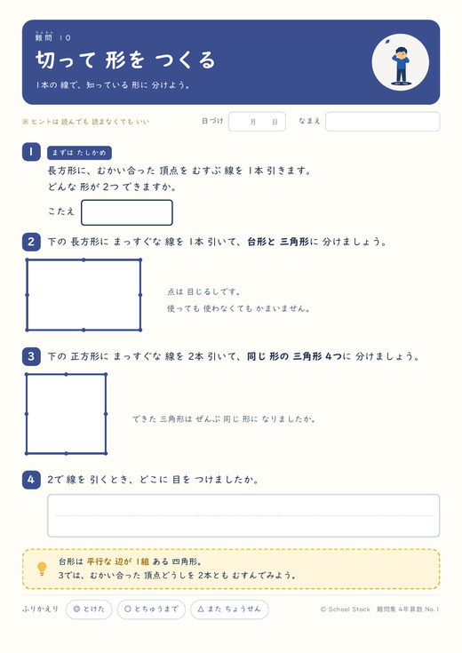

1まいに、考え方が1つずつ入っています。「もし ぜんぶ だったら」「おわりから もどる」——問題の解き方ではなく、行きづまったときの手のうごかし方のほうです。4年1学期までにならったことだけで解けるので、9月から3月まで、いまの単元に関係なく渡せます。ぜんぶ無料です。










ふだんの演習プリントは単元とセットですが、この10まいはちがいます。いま何をならっているかに関係なく渡せるように、4年1学期までの内容だけで解けるようにしました。面積・2けたでわるわり算・変わり方・□を使った式は使っていません。
公式は 書いていませんつるかめ算の〈差〉÷〈差〉のような手順は、紙にもこたえにも載せていません。表で追う、仮に決めて直す、逆にたどる——その道すじだけを残しています。手順を覚えて当てはめる紙にすると、考える場所がなくなってしまうからです。
1問目は だれでも入れる問題です1まいぜんぶが難問だと、開いた瞬間に閉じてしまいます。どの紙も1問目は「まずは たしかめ」——ふだんの計算で答えが出る問題から始まります。
ヒントは 読んでも読まなくてもかまいません紙面にもそう書いてあります。ヒントを見たことを△にしないでください。行きづまったときに自分でヒントを開くのも、考え方の1つです。
金曜の残り12分、テストが早く終わった子の机の上、家庭学習のネタ切れ——そういう場面のための紙です。表紙の目次に1まいの目安時間を入れてあるので、残り時間から選べます。
こたえの紙には、答えだけでなく「教える人へ」の一言を入れています。どこでつまずきやすいか、何を言えば動き出すかを、1まいにつき1つだけ書いてあります。
表紙は色の面が多く、印刷するとトナーを食います。配るのは問題の紙だけで足ります。
まとめてのPDFは、表紙＋問題10まい＋こたえ10まいを1本にしたものです（全21ページ）。
ぜんぶ同じだったらと 仮に決めて、ずれを見て直す。自転車と三輪車の台数を、表で追いながらさがします。
正方形を横につないだときの、ぼうの数のふえ方。1こふえるごとに何本ふえるかを、表から見つけます。
答えの側から順にもどって、はじめの数をさがす。図つきの逆算から、場面の文章題へ。
時計の長い針と短い針が、1時間で何度うごくか。うごいた分の差から、針の間の角を出します。
木の本数と、間の数はちがう。まっすぐな道と、まるい池の周りで数え方がどう変わるかを見ます。
同じならびがくりかえすとき、何番目に何が来るか。わり算のあまりが、答えの場所を教えてくれます。
方眼の中の正方形は何こ？ 大きさごとに、左上から順に数える手順を自分で決めます。
ケーキ→プリン→ゼリー。同じねだんのものに置きかえていくと、わからない値段が見えてきます。
たて・よこ・ななめの和が同じになる魔方陣。ぜんぶ同時に考えず、決まるマスから1つずつ。
垂直と平行を使って、形を切ったり、つないだり。定規と三角定規で実際にかいて確かめます。